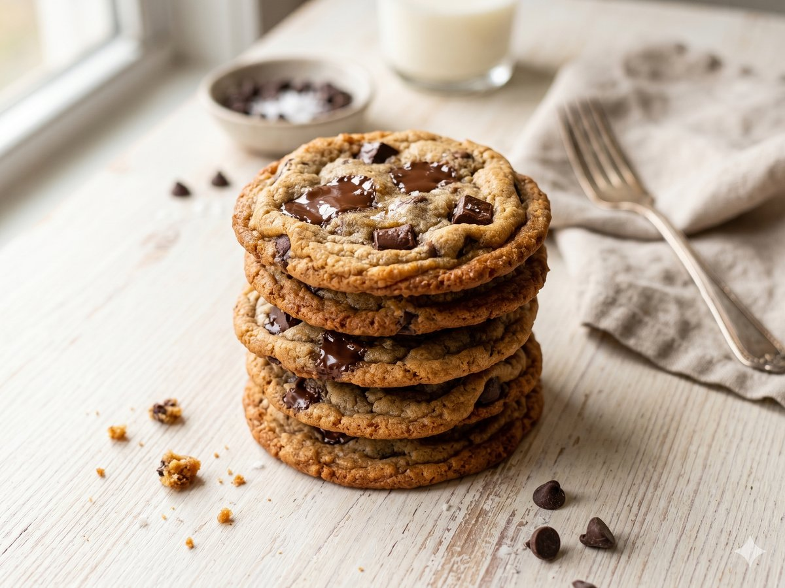

Chewy Chocolate Chip Cookies
Crisp edges, soft centers, and pools of melted chocolate.
26 min · Serves 24 · Mise Kitchen

Ingredients
- 1 cup butter, softened
- 3/4 cup brown sugar
- 1/2 cup white sugar
- 2 eggs
- 2 teaspoons vanilla extract
- 2 1/4 cups flour
- 1 teaspoon baking soda
- 1/2 teaspoon salt
- 2 cups chocolate chips
Directions
- Heat the oven to 375F and line two baking sheets.
- Cream the butter and sugars until fluffy, then beat in the eggs and vanilla.
- Mix in the flour, baking soda, and salt, then fold in the chocolate chips.
- Scoop onto the sheets and bake for 11 minutes, until the edges are golden.
- Cool on the pan for 5 minutes before transferring.
An original recipe from Mise Kitchen. Free to save and cook.